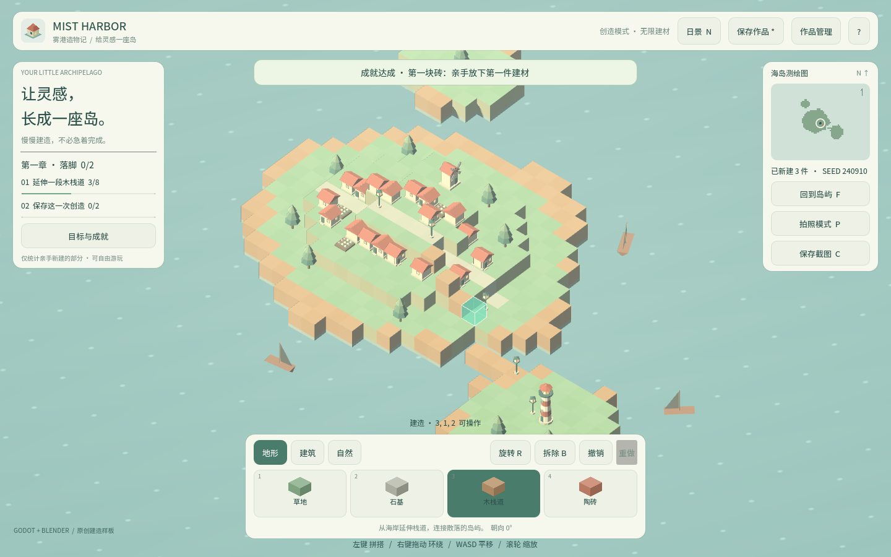
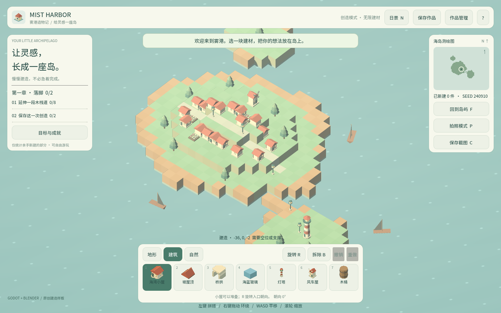
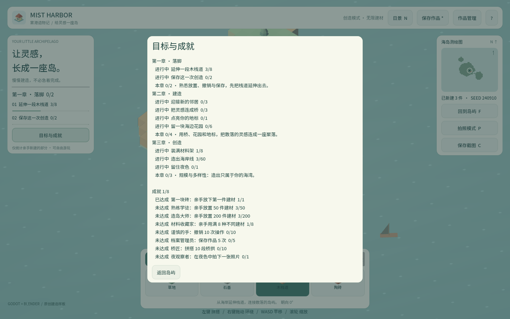

卷 1 · 第 05 章 设计先行：约束比功能更重要
本章目标：读懂
project/docs/requirements.md，理解为什么约束优先于功能，
并学会把"好听的需求"翻译成"机器可验证的验收标准"。
对应任务：T06 / T26 | 对应文件：project/docs/requirements.md
5.1 先读契约，再写代码
project/docs/requirements.md 只有一页，却决定了后面所有系统。它分六段：
| 段落 | 回答的问题 | 例子 |
|---|---|---|
| --- | --- | --- |
| 项目目标 | 我们到底在做什么 | 原创、单人、3D 海岛自由建造 |
| 已设计的玩法 | 最小可玩集是什么 | 13 种建材、堆叠/旋转/拆除、撤销 160 步、昼夜、拍照 |
| 约束条件 | 什么绝对不能做 | Godot 4.7 / GL Compatibility、不接公网数据库、不联机、建材上限 12000 |
| 验收标准 | 怎么算"真的做成了" | 放置/撤销/旋转真的改变场景；8 种模型实际导入 |
| 交付物 | 最后交什么 | Godot 工程、Blender 源、Web 成品、课程资源 |
| 不属于本样板的范围 | 明确不做什么 | 不是 Minecraft 克隆、不是第一人称 RPG、不自动评分 |
六段里最重要的是"约束"和"不属于本范围"——功能可以加，约束一旦破了，整个架构要重来。
5.2 约束怎么决定架构（三个真实例子）
| 约束 | 它直接砍掉了什么 | 它逼出来的设计 |
|---|---|---|
| --- | --- | --- |
| 不接公网数据库 | 云存档、排行榜、账号体系 | 本地存档槽 + 导出 JSON；成就存 user:// |
| 不联机 | 多人协作、交易、公会 | 单机体验做到位：撤销、拍照、章节引导 |
| Web 导出关闭线程依赖 | 多线程加载、复杂物理 | 单线程导出预设；资源一次性打进 pck |
| 建材上限 12000 / 世界 ±25 | 无限地图、流式加载 | 固定边界校验 + MAX_CELLS 常量，写入测试断言 |
📌 记这个因果链：约束 → 砍功能 → 逼出替代设计 → 落成断言。
本实训每条约束最后都能在tests/里找到对应断言（例如"越界拒绝""超限拒绝"）。
5.3 把需求翻译成"机器可验证"
对比两句需求，看差别：
| ❌ 不可验证 | ✅ 可验证 |
|---|---|
| --- | --- |
| "放置功能要好用" | check(model.place(...)) 且 get_cell(...)["kind"] == "cottage" |
| "撤销要正确" | undo() 后 has_cell() 为 false；redo() 后回到原值 |
| "存档要安全" | 9 类非法输入全部被拒，且当前世界不被破坏 |
| "模型都导入了" | scenes.size() 等于从 palette.json 推导出的数量 |
四条翻译规则：
- 用命令或断言表达，不用形容词（"好用/流畅/合理"都不是验收）
- 每条验收都对应一个具体的反例（越界、超长、错误版本）
- 数字从数据源推导，不要写死（见第 02 章"13 种建材"翻车案例）
- 写清失败时世界必须保持原样（原子性）
🤖 让 Agent 帮你做翻译：
读 project/docs/requirements.md，把"验收标准"那一段逐条翻译成
project/tests/test_world.gd 里可执行的断言；每条给出：断言名、验证什么、对应的反例。
约束：不要修改 requirements.md 的语义；不要为了让断言通过而放松校验规则。5.4 需求变了怎么办（变更流程）
1. 改 requirements.md（先改契约，不是先改代码）
2. 找出受影响的章节与任务（本实训每章都标了"对应任务"）
3. 新增/修改断言 → 跑三层验证
4. 更新 TOOLCHAIN.md 与教程对应章节 → 重跑 course_build.py真实案例：本实训后来加了"木桶"建材，触发三处连锁更新——palette.json、写死数量的断言（改为从数据推导）、字体子集（补"桶/橡"两个字）。
任何一处漏了，测试或画面就会告诉你。
🌩 在云端 agent（web-cb）里是什么样
| 🖥 本地路线 | 🌩 云端 agent（web-cb） | |
|---|---|---|
| --- | --- | --- |
| 需求文档 | 自己读 docs/requirements.md | 平台预置项目说明/skill，可能已把约束写进 Agent 上下文 |
| 约束的落地 | 自己翻译成断言 | 模板可能已带基础断言，但需要你按本项目调整 |
| 变更流程 | 自己改文档 + 改代码 + 改测试 | 流程一致；平台提供 diff/预览帮助评审 |
| 验收执行 | 本地 dev.py test | 平台一键运行，同一套断言 |
🌩 云端的便利在于"约束已经在上下文里"，风险在于你可能以为它替你把关了。
记住：平台提供约束，验证仍然要跑命令看输出。
5.5 常见坑速查（本章）
| 现象 | 原因 | 处理 |
|---|---|---|
| --- | --- | --- |
| 需求写了但没人验证 | 验收不可执行 | 按 5.3 四条规则重写 |
| 加了功能，测试红了 | 断言写死数量 | 改为从数据源推导 |
| 新文案出现豆腐块 | 子集字体缺字 | 跑 build_font_corpus.py（T28） |
| 云端与本地行为不一致 | 平台模板与仓库不同步 | 以仓库 requirements.md + 测试为准，差异写进 TOOLCHAIN.md |
5.6 本章作业
- 列出
requirements.md里三条最硬的约束，各写一句"它砍掉了什么功能" - 把"玩家可以保存作品"翻译成 3 条可执行断言（提示：正常、超长、错误版本）
- 找出本实训中"因为约束而诞生的设计"两处，写出因果链
- 若要把"不联机"改成"支持两人协作"，列出至少 5 处需要改的地方（不用实现）
🎓 教学提示（给教师 / 直播主）
- 概念锚点：需求文档是契约，不是愿望清单；最值钱的是"不做什么"。
- 课堂演示：现场把"放置功能要好用"改成可执行断言，让学生体会差别。
- 高频误解：学生以为"约束越少越好"。举例说明"不联机"反而让单机体验更聚焦。
- 讨论题（很适合当作业）：作业 4 是开放题，用来训练"变更影响面"思维。
- 批改要点：作业 2 必须包含反例（超长/错误版本），只写正向用例给一半分。
🖼 本章图集



📹 录屏分镜（8 分 30 秒）
| 时间 | 画面 | 解说词要点 |
|---|---|---|
| --- | --- | --- |
| 00:00–01:10 | 打开 requirements.md，六段逐段闪过 | "一页纸，决定后面所有系统。" |
| 01:10–03:00 | 约束→砍功能→逼出设计 三个例子 | "约束不是限制，是设计方向。" |
| 03:00–05:00 | 不可验证 vs 可验证 对照表 | "'好用'不是验收，命令才是。" |
| 05:00–06:30 | 现场用 Agent 翻译验收为断言 | "把形容词换成断言。" |
| 06:30–08:00 | 云端对照 + 变更流程 | "先改契约，再改代码。" |
| 08:00–08:30 | 作业 + 预告（世界模型） |
🎬 视频位（待录制）
把录好的视频放到course/media/video/05/（mp4 / webm / mov），重新执行 python tools/course_build.py 即会自动内嵌；首帧默认用本章第一张截图作为封面。分镜脚本见上一节。🖼 配图清单
| 文件名 | 内容 | 生成方式 |
|---|---|---|
| --- | --- | --- |
05-game-start.png | 起始画面（对照"最小可玩集"） | python tools/course_capture.py --chapter 05 |
05-boardwalk.png | 连铺三块木栈道（"延伸一段木栈道"目标） | 同上 |
05-progress-first-chapter.png | 第一章进度面板（验收可视化） | 同上 |
🎥 直播脚本（L2 片段，12 分钟）
- 开场投票："
不联机是优点还是缺点？"——引发讨论后再讲约束的价值 - 演示：现场把一条形容词需求改写成断言并跑测试
- 互动：让观众给出自己的项目约束，一起推演"它砍掉了什么"
- 收尾：强调"先改契约再改代码"
❓ 本章 FAQ
Q：需求文档要写多细？
A：细到"每条都能翻译成一条断言或一条命令"。写不出验收的需求，等于没想清楚。
Q：云端平台给的模板需求，我能改吗？
A：能，而且应该按你的 PBL 项目改。改完记得同步断言与教程（5.4 流程）。
Q：约束会不会限制创意？
A：恰恰相反。本实训 9 件资产、三章引导，都是在"不联机、不接库"的约束下长出来的。